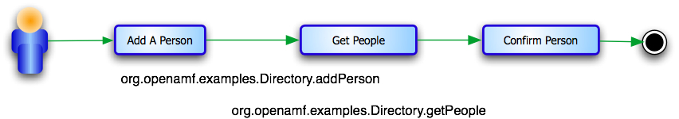

This
article shows how to build a test in Appvance PerformanceCloud(APC) using AMF
Protocols to test Adobe Flex/Flash based applications.
Note: Find all of the code and data described in this article
in /tutorials/FlexFlashAMFTests.
AMF is a network protocol that makes it easy for Flex and Flash
components running in a browser to communicate with PHP, Java, and
other back-end technologies. APC provides a native AMF protocol
handler.
AMF is the
Action
Message Format. AMF is a proprietary data format created by
Macromedia (now
Adobe)
and used by different mediums: Flash Remoting, ByteArray,
IExternalizable, NetConnection, NetStream, LocalConnection, Shared
Objects and more. All of these mediums share the same core data types
and ActionScript data types. Each medium uses its own exclusive
envelope. Any AMF-related project should implement reading and writing
core data types, relevant Actionscript types, as well as providing
support for its envelope type.
Click
here for
tutorials on open source AMF.
Tasks
and Scenario
This tutorial
uses an example Directory application that ships with APC. The
tutorial shows how to develop a data-driven functional test of the
Directory application.
- Download the Tutorials Folder
- Write A Unit Test For The Directory Application
- Run The Test In A TestNode
- Repurpose The Test As a Load Test
- Repurpose The Test As a Business Service Monitor
Test
Use Case
A software quality tester needs to rapidly build a test of
an Directory application. The application keeps track of contact
information for employees.

The test begins by adding a new person to the directory. The test then
gets a list of people in the directory. The test asserts that the new
person is in the directory. If the person is not in the directory the
test throws an exception and APC logs the test as a failure.
This
tutorial should take you approximately 45 minutes to build and operate
a test. The following sections show step-by-step instructions.